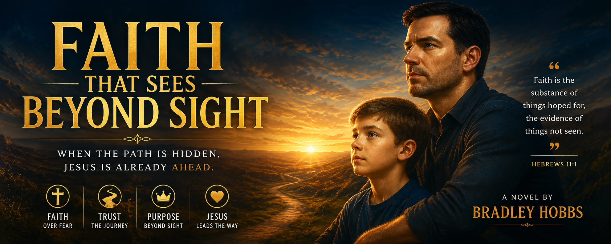

A journey through unseen seasons, hidden struggles, divine encounters, and discovering that Jesus is already moving before human eyes recognize His hand.
Begin ReadingFaith becomes easy when answers arrive quickly. Trust feels simple when every prayer unfolds exactly as expected. Real life often carries moments where the road ahead appears empty and hope feels stretched beyond comfort.
Faith That Sees Beyond Sight follows Brad through seasons of uncertainty, dreams, unseen battles, divine encounters, and moments where Jesus speaks in ways that transform everything.
Alongside Gabriel and Justin, a journey unfolds through testing, healing, purpose, and discovering that heaven often moves before human eyes understand what Jesus already prepared.